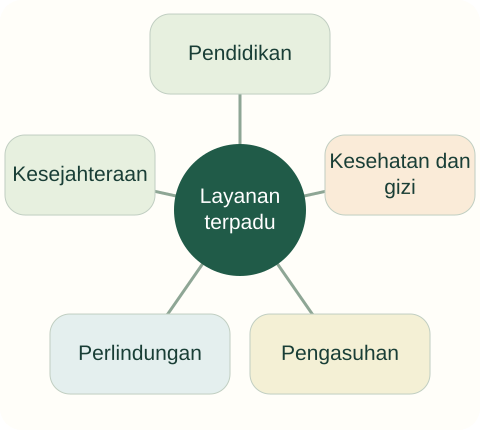

Tujuan pembelajaran
- Menjelaskan kedudukan layanan PAUD dan RA
- Membedakan standar, kurikulum, dan koordinasi PAUD HI
- Merancang pembagian peran untuk kasus satu anak
PAUD sebagai upaya pembinaan
UU No. 20 Tahun 2003 Pasal 1 angka 14 menempatkan PAUD pada rentang sejak lahir sampai usia enam tahun. Pasal 28 menerangkan kedudukannya sebelum pendidikan dasar serta penyelenggaraan melalui jalur formal, nonformal, dan informal. Pada jalur formal terdapat TK, RA, atau bentuk lain yang sederajat. Kelompok Bermain dan Taman Penitipan Anak termasuk bentuk nonformal, sedangkan pendidikan keluarga atau yang diselenggarakan oleh lingkungan termasuk jalur informal.
Standar nasional, kurikulum, dan RA
Standar nasional memberi kriteria penyelenggaraan. Kurikulum mengatur arah dan kerangka pembelajaran. Untuk PAUD, baca standar kompetensi lulusan dan standar isi sesuai lingkup PAUD, serta dokumen capaian pembelajaran yang relevan. Untuk RA, pedoman implementasi kurikulum Kementerian Agama dibaca secara khusus, termasuk KMA No. 450 Tahun 2024 sebagaimana diubah melalui KMA No. 1503 Tahun 2025. Pemilihan dokumen dimulai dengan memastikan satuan, jalur, lingkup, dan ketentuan yang sedang dirujuk.
Holistik-integratif sebagai koordinasi
Perpres No. 60 Tahun 2013 tentang Pengembangan Anak Usia Dini Holistik-Integratif mengarahkan pemenuhan kebutuhan esensial anak secara terpadu. Dimensi layanan meliputi pendidikan, kesehatan dan gizi, pengasuhan, perlindungan, dan kesejahteraan. Holistik melihat kebutuhan anak sebagai satu kesatuan. Integratif menghubungkan pihak yang memiliki mandat berbeda. Guru mengamati partisipasi dan kebutuhan belajar, keluarga menyampaikan informasi yang relevan, dan tenaga kesehatan melakukan pemeriksaan sesuai kewenangan.
Menerjemahkan kebijakan ke praktik
Guru dapat mencatat kapan anak tampak lelah, kegiatan yang tetap menarik minatnya, dan penyesuaian yang membantu partisipasinya. Keluarga dan pihak yang berwenang dapat membahas dukungan dengan menghormati kerahasiaan. Kebijakan memberi kerangka kerja, sedangkan keputusan kelas tetap memerlukan informasi tentang anak dan sumber daya setempat. Untuk pengantar konsep PAUD Indonesia, lihat Suyadi dan Ulfah (2013), dengan ketentuan mutakhir dibaca melalui sumber resmi.
Diagram konsep

Bagaimana satuan PAUD merespons kebutuhan anak yang melintasi layanan?

Seorang anak di RA tetap ingin bermain setelah kegiatan dimulai, tetapi ia beberapa kali tampak lelah dan keluarganya menanyakan layanan pemantauan tumbuh kembang. Guru mendiskusikan dukungan bersama keluarga dan petugas kesehatan yang berwenang.
- Pihak mana yang terlihat dalam percakapan?
- Apa saja kebutuhan yang dapat dibahas dari adegan kelas?
Pembahasan kasus
Guru menyesuaikan durasi atau memberi pilihan posisi bermain sambil mendokumentasikan pengamatan. Dengan keluarga, satuan menyepakati kapan membahas kembali dan bagaimana menghubungi layanan yang memang berwenang bila diperlukan.
Buka contoh penalaran setelah mencoba
Susun pembagian peran ketika guru memperhatikan anak sering lelah.
Guru mencatat partisipasi, keluarga memberi informasi yang relevan, dan petugas kesehatan menangani pemeriksaan.
Latihan terbimbing
Kelompokkan contoh tindakan dalam kasus berdasarkan kewenangan guru, keluarga, dan tenaga kesehatan. Jelaskan siapa yang mengoordinasikan tindak lanjut di tingkat satuan.
Latihan mandiri
Susun peta layanan sekitar satu RA untuk pendidikan, kesehatan, dan perlindungan. Tulis satu alur komunikasi yang menjaga kerahasiaan anak.
Lihat pembahasan
mengumpulkan informasi pendidikan dan berkoordinasi sesuai kewenangan
Guru mengamati pengalaman dan partisipasi anak, lalu berkoordinasi dengan pihak yang berwenang.
Refleksi calon pendidik
Tindakan apa yang dapat saya ambil di kelas sembari menunggu informasi dari pihak lain?
Catatan hanya disimpan di peramban ini. Tidak dikirim kepada dosen.
Referensi dan bacaan pendamping
- Republik Indonesia. (2003). Undang-Undang Nomor 20 Tahun 2003 tentang Sistem Pendidikan Nasional.Fokus Pasal 1, 3, 13, dan 28. Status UU secara keseluruhan tidak berarti seluruh pasal bebas perubahan atau putusan pengadilan.
- Republik Indonesia. (2013). Peraturan Presiden Nomor 60 Tahun 2013 tentang Pengembangan Anak Usia Dini Holistik-Integratif.Layanan lintas sektor; tidak menjadikan guru pengganti tenaga kesehatan atau pekerja sosial.
- Republik Indonesia. (2021). Peraturan Pemerintah Nomor 57 Tahun 2021 tentang Standar Nasional Pendidikan, sebagaimana diubah dengan Peraturan Pemerintah Nomor 4 Tahun 2022.Baca PP dasar bersama perubahannya; tautan menuju daftar landasan hukum resmi.
- Kementerian Pendidikan Dasar dan Menengah. (2025). Peraturan Menteri Pendidikan Dasar dan Menengah Nomor 10 Tahun 2025 tentang Standar Kompetensi Lulusan pada Pendidikan Anak Usia Dini, Jenjang Pendidikan Dasar, dan Jenjang Pendidikan Menengah.Gunakan bagian PAUD. Capaian tidak ditafsirkan menjadi ujian kelulusan akademik bagi anak.
- Kementerian Pendidikan Dasar dan Menengah. (2025). Peraturan Menteri Pendidikan Dasar dan Menengah Nomor 12 Tahun 2025 tentang Standar Isi pada Pendidikan Anak Usia Dini, Jenjang Pendidikan Dasar, dan Jenjang Pendidikan Menengah.Ruang lingkup PAUD tidak identik dengan pemisahan mata pelajaran sekolah dasar.
- Kementerian Pendidikan Dasar dan Menengah. (2025). Peraturan Menteri Pendidikan Dasar dan Menengah Nomor 13 Tahun 2025 tentang Perubahan atas Permendikbudristek Nomor 12 Tahun 2024 tentang Kurikulum pada Pendidikan Anak Usia Dini, Jenjang Pendidikan Dasar, dan Jenjang Pendidikan Menengah.Baca bersama aturan dasar 12/2024, bukan sebagai dokumen yang berdiri sendiri.
- Badan Standar, Kurikulum, dan Asesmen Pendidikan. (2025). Keputusan Kepala BSKAP Nomor 046/H/KR/2025 tentang Capaian Pembelajaran pada Pendidikan Anak Usia Dini, Jenjang Pendidikan Dasar, dan Jenjang Pendidikan Menengah.Baca bagian PAUD sesuai lingkup dokumen dan jenis satuan.
- Kementerian Agama. (2025). Keputusan Menteri Agama Nomor 1503 Tahun 2025 tentang Perubahan atas Keputusan Menteri Agama Nomor 450 Tahun 2024 tentang Pedoman Implementasi Kurikulum pada Raudhatul Athfal, Madrasah Ibtidaiyah, Madrasah Tsanawiyah, Madrasah Aliyah, dan Madrasah Aliyah Kejuruan.Rujukan khusus RA dan madrasah. Judul portal JDIH memuat pengulangan kata; bibliografi menormalkan pengulangan itu.
- Suyadi, & Ulfah, M. (2013). Konsep dasar PAUD. Remaja Rosdakarya.Bacaan pendamping untuk peta PAUD Indonesia. Tahun mengikuti terbitan 2013; cocokkan dengan cetakan yang digunakan.